以下是可以在122.0.65.73 23333端口使用的先行卡的列表。下载补丁后即可使用。
使用方法：原版游戏下载补丁后解压至游戏文件夹，YGOMobile请自定义数据库（方法请查看压缩包内使用说明），暂不保证对其他版本的支持。
资料来源：任天堂世界论坛，@Solari_28。
脚本作者：ygopro-pre-script，YGOPRO。目前所有脚本来自于以上这2个项目，在此对各自的贡献者表示感谢。
版权声明：转载请注明出自本页面，并完整保留附带的使用说明文档。如果您想对本项目进行修改，请移步这里，但我们建议您直接参与官方项目ygopro-pre-script。
星星和加号图标是Yusuke Kamiyamane的作品。
更新记录
- 2016-06-05 23:53
- 新卡：苏生栗子球。二效果暂时无法使用。
- 更新：优化部分卡图。
- 修复：蛇神 格特殊召唤效果在怪兽区没有格子时应送去墓地。
- 修复：根据调整，天声的服从应为发动方特殊召唤。
- 2016-06-01 21:08
- 修复：蛇神 格下降攻击力的处理。
- 2016-06-01 19:14
- 新卡：蛇神 格。
- 修复：更新ABC-神龙歼灭者的召唤条件。
- 2016-06-01 10:05
- 修复：ABC-神龙歼灭者不能用装备的同盟特殊召唤的问题。
- 2016-06-01 00:05
- 更新：优化部分卡图。
- 修复：更新ABC-神龙歼灭者的召唤条件，修复只有2个格子时不能发动解体效果的问题。
- 修复：修复暗黑圣域的效果处理。
- 2016-05-31 23:02
- 新卡：芳香炽天使-欧白芷。
- 更新：更新部分脚本到最新版。
- 修复：老千御法度会把所有从手卡召唤的怪兽回到手卡的问题，和不触发自爆效果的问题，和发动时出现问号的问题。
- 2016-05-24 20:29
- 修复：临时修复PSY骨架多线人在手卡不视为PSY骨架驱动者的问题。
- 2016-05-24 19:25
- 新卡：PSY骨架多线人，电子化天使-美朱濡-。
- 更新：优化部分卡图。
- 修复：同盟怪兽把自己特殊召唤的效果效果处理时没有格子的场合应送去墓地。
- 2016-05-21 19:37
- 修复：暗镇魂超量龙不能在伤害步骤发动效果的问题。
- 2016-05-21 19:05
- 新卡：青色眼睛的威光。
- 更新：优化部分卡图。
- 2016-05-20 23:04
- 修复：黑魔术的继承未被标记为记载了「黑魔术师」的卡的问题。
- 更新：拼缝型毛绒动物代替素材的效果已经能在23333服直接正常使用。
- 2016-05-20 01:31
- 修复：磁力会使对方怪兽不受自己的效果影响的问题。
- 修复：黑魔术的继承在部分情况下无法使用的问题。
- 2016-05-19 22:54
- 修复：超来来不能把怪兽特殊召唤的问题。
- 2016-05-19 22:32
- 修复：捕食植物 海鳝猪笼草2效果不能把怪兽装备的问题。
- 修复：黑魔术的继承在部分情况下无法使用的问题。
- 2016-05-19 22:04
- 新卡：VJMP公布新卡共29张已全部更新完毕可以使用。
- 2016-05-19 16:22
- 修复：天声的服从在对方卡组没有宣言的卡时自己卡组洗牌的问题。
- 修复：捕食植物 海鳝猪笼草3效果无法使用的问题。
- 修复：光波镜骑士在对方怪兽被战斗破坏时也能发动的问题。
- 修复：暗镇魂超量龙2效果不能被神之警告对应的问题。
- 2016-05-19 15:13
- 修复：花积和超来来无法使用的问题。
- 2016-05-19 09:05
- 修复：凶饿毒融合龙上升自己场上怪兽攻击力的问题，和被破坏不能发动的问题。
- 修复：升阶魔法-幻影骑士团的出击未被标记为幻影骑士团卡的问题，和效果不能使用的问题。
- 2016-05-18 23:27
- 新卡：VJMP公布新卡共29张，部分卡暂时无法使用，将在近期更新。
- 更新：修改部分卡片名称，优化卡图。
- 2016-05-15 23:18
- 新卡：暗黑圣域。
- 更新：删除已经正式更新的卡。
- 2016-05-15 02:04
- 修复：绝望天王星不能发动的问题。
- 2016-05-15 00:09
- 修复：镇压冥王星提示错误的问题，请重新下载补丁。
- 修复：花札卫-雨四光-把自己无效的处理。
- 更新：优化部分卡图。
- 2016-05-14 21:11
- 修复：No.24 龙血鬼 德拉古勒斯不能把自己里侧表示特殊召唤的问题。
- 修复：花札卫系列卡在没有格子时抽到的卡会被丢弃的问题。
- 修复：娱乐伙伴 小角效果处理时对象控制权转移的场合效果应不处理。
- 修复：绝望天王星在卡组没有永续魔法·陷阱卡时应不能发动。
- 修复：镇压冥王星应能破坏场地魔法。
- 更新：根据调整，No.100 源数龙在双方墓地没有可盖放的卡时也能发动。
- 2016-05-13 21:08
- 修复：No.24 龙血鬼 德拉古勒斯的攻击力·守备力。
- 2016-05-13 20:58
- 新卡：CPF1全卡已更新。
- 更新：优化部分卡图。
- 更新：No.78 №系档案馆应为1星怪兽×2。
- 修复：No.45 灭亡之预言者未标记No.编号的问题。
- 2016-05-10 21:10
- 更新：更改部分卡名与NW同步。
- 更新：优化TCG908卡图。
- 更新：增加No.98 绝望皇 霍普勒斯进入战斗阶段时点提示。
- 2016-05-09 21:18
- 新卡：No.59 背反之料理人、No.98 绝望皇 霍普莱斯。
- 2016-05-08 09:53
- 新卡：祝福的教会-仪式教堂。
- 修复：花札卫-柳间小野道风-同调素材等级效果应能被无效。
- 2016-05-07 13:58
- 修复：绝望天王星应为对方选择卡牌类型。
- 2016-05-06 19:23
- 新卡：宏大木星、绝望天王星。
- 更新：优化部分卡图。
- 修复：No.78 №系档案馆改为「No.1」～「No.99」。
- 修复：修复星兹系列卡的提示文字。
- 2016-05-03 10:45
- 修复：银河影龙攻击力应为2000。
- 2016-05-03 09:51
- 修复：花札卫-柳间小野道风-无法使用的问题。
- 2016-05-02 22:55
- 新卡：电子化小天使、No.51 怪腕之必杀摔角手、No.78 №系档案馆、花札卫-柳间小野道风-。
- 更新：更新TCG908全卡正式密码，请重新下载补丁组卡。
卡片列表
| 卡图 | 卡名 | 效果 |
|---|---|---|
 | 古生物 林乔利虫 | [陷阱] ①：以除外的1张自己或者对方的卡为对象才能发动。那张卡回到墓地。 ②：场上的陷阱卡发动时，连锁那个发动这个效果才能从墓地发动。这张卡变成通常怪兽（水族·水·2星·攻1200/守0）在怪兽区域特殊召唤（不当作陷阱卡使用）。这个效果特殊召唤的这张卡不受怪兽的效果影响，从场上离开的场合除外。 |
 | 古生物 伊尔东钵 | [陷阱] ①：以场上1只表侧表示怪兽为对象才能发动。那只怪兽的攻击力·守备力直到回合结束时上升500。 ②：场上的陷阱卡发动时，连锁那个发动这个效果才能从墓地发动。这张卡变成通常怪兽（水族·水·2星·攻1200/守0）在怪兽区域特殊召唤（不当作陷阱卡使用）。这个效果特殊召唤的这张卡不受怪兽的效果影响，从场上离开的场合除外。 |
 | 古生物 皮卡虫 | [陷阱] ①：从手卡丢弃1张「古生物」卡。那之后，自己从卡组抽2张。 ②：场上的陷阱卡发动时，连锁那个发动这个效果才能从墓地发动。这张卡变成通常怪兽（水族·水·2星·攻1200/守0）在怪兽区域特殊召唤（不当作陷阱卡使用）。这个效果特殊召唤的这张卡不受怪兽的效果影响，从场上离开的场合除外。 |
 | 古生物 拟油栉虫 | [陷阱] ①：以场上1张魔法·陷阱卡为对象才能发动。那张卡破坏。 ②：场上的陷阱卡发动时，连锁那个发动这个效果才能从墓地发动。这张卡变成通常怪兽（水族·水·2星·攻1200/守0）在怪兽区域特殊召唤（不当作陷阱卡使用）。这个效果特殊召唤的这张卡不受怪兽的效果影响，从场上离开的场合除外。 |
 | 古生物 欧巴宾海蝎 | [怪兽|效果|超量] 水/水 [☆2] 0/2400 2星怪兽×2 「古生物 欧巴宾海蝎」的③的效果1回合只能使用1次。 ①：这张卡不受其他怪兽的效果影响。 ②：只要这张卡在怪兽区域存在，自己的「古生物」陷阱卡的发动从手卡也能用。 ③：这张卡有陷阱卡在作为超量素材的场合，把这张卡1个超量素材取除才能发动。从卡组把1张「古生物」陷阱卡加入手卡。 |
 | 古生物 足杯虫 | [陷阱] ①：以场上1张表侧表示的卡为对象才能发动。丢弃1张手卡，作为对象的卡除外。 ②：场上的陷阱卡发动时，连锁那个发动这个效果才能从墓地发动。这张卡变成通常怪兽（水族·水·2星·攻1200/守0）在怪兽区域特殊召唤（不当作陷阱卡使用）。这个效果特殊召唤的这张卡不受怪兽的效果影响，从场上离开的场合除外。 |
 | 古生物 奇虾 | [怪兽|效果|超量] 水/水 [☆2] 2400/0 2星怪兽×3只以上 ①：这张卡不受其他怪兽的效果影响。 ②：1回合1次，自己的魔法与陷阱区域的陷阱卡被送去墓地的场合才能发动。自己卡组最上面的卡翻开，那是陷阱卡的场合，加入手卡。不是的场合，送去墓地。 ③：这张卡有陷阱卡在作为超量素材的场合，1回合1次，把这张卡1个超量素材取除，以场上1张卡为对象才能发动。那张卡破坏。这个效果在对方回合也能发动。 |
 | 古生物 怪诞虫 | [陷阱] ①：以场上1只表侧表示怪兽为对象才能发动。那只怪兽的攻击力·守备力直到回合结束时变成一半。 ②：场上的陷阱卡发动时，连锁那个发动这个效果才能从墓地发动。这张卡变成通常怪兽（水族·水·2星·攻1200/守0）在怪兽区域特殊召唤（不当作陷阱卡使用）。这个效果特殊召唤的这张卡不受怪兽的效果影响，从场上离开的场合除外。 |
 | 古生物 马尔三叶形虫 | [陷阱] ①：从卡组把1张陷阱卡送去墓地。 ②：场上的陷阱卡发动时，连锁那个发动这个效果才能从墓地发动。这张卡变成通常怪兽（水族·水·2星·攻1200/守0）在怪兽区域特殊召唤（不当作陷阱卡使用）。这个效果特殊召唤的这张卡不受怪兽的效果影响，从场上离开的场合除外。 |
 | 古生物 加拿大虫 | [陷阱] ①：以对方场上1只表侧表示怪兽为对象才能发动。那只怪兽变成里侧守备表示。 ②：场上的陷阱卡发动时，连锁那个发动这个效果才能从墓地发动。这张卡变成通常怪兽（水族·水·2星·攻1200/守0）在怪兽区域特殊召唤（不当作陷阱卡使用）。这个效果特殊召唤的这张卡不受怪兽的效果影响，从场上离开的场合除外。 |
| 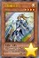 | 沉默魔导剑士 | [怪兽|效果] 天使/光 [★4] 500/1500 ①：这张卡召唤成功时才能发动。从卡组把1只「沉默剑士 LV3」或者「沉默魔术师 LV4」加入手卡。 ②：只在这张卡在场上表侧表示存在才有1次，只以自己场上的怪兽1只为对象的魔法卡发动时才能发动。那个发动无效。 ③：场上的这张卡被战斗或者对方的效果破坏的场合，以自己墓地1只光属性的「LV」怪兽为对象才能发动。那只怪兽加入手卡。 （效果未确定，暂时无法使用） |
| 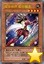 | 娱乐伙伴 俊侍狮虎 | [怪兽|效果] 兽战士/地 [★4] 1800/400 「娱乐伙伴 俊侍狮虎」的效果1回合只能使用1次。 ①：这张卡战斗破坏对方怪兽送去墓地时才能发动。从卡组把1只5星以上的灵摆怪兽加入手卡。 |
| 拼缝型毛绒动物 | [怪兽|效果] 天使/地 [★1] 0/0 ①：这张卡只要在怪兽区域存在，也当作「魔玩具」怪兽使用。 ②：这张卡只要在怪兽区域存在，可以作为「魔玩具」融合怪兽卡有卡名记述的1只融合素材怪兽的代替。那个时候，其他的融合素材怪兽必须是正规品。 | |
| 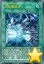 | 究极爆风弹 | [魔法] ①：以自己场上1只融合召唤的「青眼究极龙」为对象才能发动。这个回合，那只怪兽在同1次的战斗阶段中可以作3次攻击，那只怪兽攻击的场合，直到伤害步骤结束时对方不能把魔法·陷阱·怪兽的效果发动。 |
| 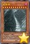 | 蛇神 格 | [怪兽|效果] 爬虫类/暗 [★12] ?/0 这张卡不能通常召唤，用这张卡的效果才能特殊召唤。 ①：自己场上的怪兽被对方的攻击·效果破坏的场合，把基本分支付一半才能发动。这张卡从手卡特殊召唤。 ②：这张卡不会成为效果的对象。 ③：这张卡向对方怪兽攻击的伤害步骤内，那只怪兽的效果无效化，攻击力变成原本攻击力的一半。 ④：这张卡进行战斗的伤害计算时才能发动。这张卡的攻击力变成和场上的怪兽的最高原本攻击力相同。 （注：效果不确定） |
| 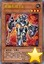 | 电磁石战士α | [怪兽|效果] 岩石/地 [★3] 1700/1100 「电磁石战士α」的①的效果1回合只能使用1次。 ①：这张卡召唤·特殊召唤成功的场合才能发动。从卡组把1只8星的「磁石战士」怪兽加入手卡。 ②：对方回合把这张卡解放才能发动。从卡组把1只4星的「磁石战士」怪兽特殊召唤。 |
| 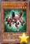 | 电磁石战士β | [怪兽|效果] 岩石/地 [★3] 1500/1500 「电磁石战士β」的①的效果1回合只能使用1次。 ①：这张卡召唤·特殊召唤成功的场合才能发动。从卡组把「电磁石战士β」以外的1只4星以下的「磁石战士」怪兽加入手卡。 ②：对方回合把这张卡解放才能发动。从卡组把1只4星的「磁石战士」怪兽特殊召唤。 |
| 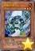 | 电磁石战士γ | [怪兽|效果] 岩石/地 [★3] 800/2000 「电磁石战士γ」的①的效果1回合只能使用1次。 ①：这张卡召唤·特殊召唤成功的场合才能发动。从手卡把「电磁石战士γ」以外的1只4星以下的「磁石战士」怪兽特殊召唤。 ②：对方回合把这张卡解放才能发动。从卡组把1只4星的「磁石战士」怪兽特殊召唤。 |
| 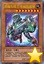 | 电磁石战士 电磁狂神 | [怪兽|效果] 岩石/地 [★8] 3000/2800 这张卡不能通常召唤。从自己的手卡·场上·墓地把「电磁石战士α」「电磁石战士β」「电磁石战士γ」各1只除外的场合可以特殊召唤。 ①：从自己墓地把1只4星以下的「磁石战士」怪兽除外，以对方场上1张卡为对象才能发动。那张卡破坏。 ②：这张卡被战斗或者对方的效果破坏的场合，以除外的自己的「电磁石战士α」「电磁石战士β」「电磁石战士γ」各1只为对象才能发动。那些怪兽特殊召唤。 |
| 苏生栗子球 | [怪兽|效果] 恶魔/光 [★1] 300/200 ①：自己·对方的战斗阶段结束时把这张卡从手卡丢弃，以这个回合被战斗破坏送去自己墓地的1只怪兽为对象才能发动。那只怪兽特殊召唤。 ②：对方怪兽的攻击宣言时，把墓地的这张卡除外，以自己墓地的「栗子球」怪兽任意数量为对象才能发动。那些怪兽特殊召唤。 | |
| 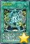 | 超电磁场 | [魔法|场地] 「超电磁场」的①的效果1回合只能使用1次。 ①：自己场上有4星以下的岩石族·地属性怪兽存在的场合，以自己墓地1只4星以下的「磁石战士」怪兽为对象才能把这个效果发动。那只怪兽特殊召唤。 ②：1回合1次，和自己的岩石族·地属性怪兽的战斗没让对方怪兽被破坏的伤害步骤结束时才能发动。那只对方怪兽回到持有者手卡。 |
| 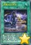 | 黑魔术的继承 | [魔法|速攻] 「黑魔术的继承」在1回合只能发动1张。 ①：从自己墓地把2张魔法卡除外才能发动。把「黑魔术的继承」以外的有「黑魔术师」的卡名或者「黑魔术少女」的卡名记述的1张魔法·陷阱卡从卡组加入手卡。 |
| 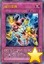 | 磁力变换 | [陷阱] ①：以自己墓地最多3只4星以下的「磁石战士」怪兽为对象才能发动。那些怪兽加入手卡。 ②：把墓地的这张卡除外，以除外的1只自己的4星以下的「磁石战士」怪兽为对象才能发动。那只怪兽特殊召唤。这个效果在这张卡送去墓地的回合不能发动。 |
| 超电导战机 皇神磁炮王 | [怪兽|效果|融合] 岩石/地 [★10] 4000/4000 「磁石战士 电磁武神」＋「电磁石战士 电磁狂神」 这张卡用以上记的卡为融合素材的融合召唤才能特殊召唤。 ①：1回合1次，对方把怪兽的效果·魔法·陷阱卡发动时才能发动。那个发动无效并破坏。 ②：表侧表示的这张卡因对方的效果从场上离开的场合才能发动。把「磁石战士 电磁武神」「电磁石战士 电磁狂神」各1只从手卡·卡组无视召唤条件特殊召唤。 | |
| 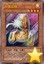 | A-突击核 | [怪兽|效果|同盟] 机械/光 [★4] 1900/200 ①：1回合1次，可以从以下效果选择1个发动。 ●以自己场上1只机械族·光属性怪兽为对象，把这张卡当作装备卡使用给那只怪兽装备。装备怪兽被战斗·效果破坏的场合，作为代替把这张卡破坏。 ●装备的这张卡特殊召唤。 ②：装备怪兽不受其他的对方怪兽的效果影响。 ③：这张卡从场上送去墓地的场合才能发动。选这张卡以外的自己墓地1只同盟怪兽加入手卡。 |
| 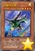 | B-破坏龙兽 | [怪兽|效果|同盟] 机械/光 [★4] 1500/1800 ①：1回合1次，可以从以下效果选择1个发动。 ●以自己场上1只机械族·光属性怪兽为对象，把这张卡当作装备卡使用给那只怪兽装备。装备怪兽被战斗·效果破坏的场合，作为代替把这张卡破坏。 ●装备的这张卡特殊召唤。 ②：装备怪兽不受其他的对方的魔法卡的效果影响。 ③：这张卡从场上送去墓地的场合才能发动。从卡组把1只同盟怪兽加入手卡。 |
| 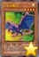 | C-粉碎翼龙 | [怪兽|效果|同盟] 机械/光 [★4] 1200/2000 ①：1回合1次，可以从以下效果选择1个发动。 ●以自己场上1只机械族·光属性怪兽为对象，把这张卡当作装备卡使用给那只怪兽装备。装备怪兽被战斗·效果破坏的场合，作为代替把这张卡破坏。 ●装备的这张卡特殊召唤。 ②：装备怪兽不受其他的对方的陷阱卡的效果影响。 ③：这张卡从场上送去墓地的场合才能发动。从手卡把1只同盟怪兽特殊召唤。 |
| 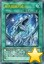 | 青色眼睛的威光 | [魔法|速攻] 「青色眼睛的威光」在1回合只能发动1张。 ①：从手卡·卡组把1只「青眼」怪兽送去墓地，以场上1只表侧表示怪兽为对象才能发动。那只怪兽只要在场上表侧表示存在不能攻击。 |
| 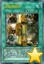 | 同盟格纳库 | [魔法|场地] 「同盟格纳库」在1回合只能发动1张。 ①：作为这张卡的发动时的效果处理，可以从卡组把1只机械族·光属性的同盟怪兽加入手卡。 ②：1回合1次，自己场上有机械族·光属性的同盟怪兽召唤·特殊召唤的场合，以那1只怪兽为对象才能发动。从卡组选可以给那只怪兽装备而卡名不同的1只机械族·光属性的同盟怪兽给那只怪兽装备。这个效果装备的同盟怪兽在这个回合不能特殊召唤。 |
| 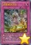 | 同盟紧急出动 | [陷阱] 「同盟紧急出动」在1回合只能发动1张。 ①：以除外的自己的机械族·光属性的最多3只通常怪兽或者同盟怪兽为对象才能发动。那些怪兽特殊召唤。 ②：把墓地的这张卡除外，以除外的自己的机械族·光属性的1只通常怪兽或者同盟怪兽为对象才能发动。那只怪兽回到手卡。这个效果在这张卡送去墓地的回合不能发动。 |
 | AtoZ-神龙歼灭炮 | [怪兽|效果|融合] 机械/光 [★10] 4000/4000 「ABC-神龙歼灭者」＋「XYZ-神龙炮」 把自己场上的原本卡名是上记的卡除外的场合才能特殊召唤（不需要「融合」）。 ①：对方把怪兽的效果·魔法·陷阱卡发动时，丢弃1张手卡才能发动。那个发动无效并破坏。 ②：把场上的这张卡除外，以除外的自己的「ABC-神龙歼灭者」「XYZ-神龙炮」各1只为对象才能发动。那些怪兽特殊召唤。这个效果在对方回合也能发动。 |
| ABC-神龙歼灭者 | [怪兽|效果|融合] 机械/光 [★8] 3000/2800 「A-突击核」＋「B-破坏龙兽」＋「C-粉碎翼龙」 把自己的场上·墓地的上记卡除外的场合才能从额外卡组特殊召唤（不需要「融合」）。 ①：1回合1次，丢弃1张手卡，以场上1张卡为对象才能发动。那张卡除外。这个效果在对方回合也能发动。 ②：对方回合把这张卡解放，以除外的自己的机械族·光属性的同盟怪兽3种类为对象才能发动。那些怪兽特殊召唤。 | |
| 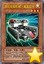 | 强化支援机械·重装铠甲 | [怪兽|效果|同盟] 机械/光 [★3] 500/500 ①：这张卡召唤成功的场合，以自己墓地1只同盟怪兽为对象才能发动。那只怪兽特殊召唤。 ②：1回合1次，可以从以下效果选择1个发动。 ●以自己场上1只机械族怪兽为对象，把这张卡当作装备卡使用给那只怪兽装备。装备怪兽被战斗·效果破坏的场合，作为代替把这张卡破坏。 ●装备的这张卡特殊召唤。 ③：装备怪兽不会成为对方的效果的对象。 |
| 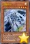 | 沉默剑士 | [怪兽|效果] 战士/光 [★4] 1000/1000 这张卡不能通常召唤。把自己场上1只战士族怪兽解放的场合才能特殊召唤。 ①：自己·对方的准备阶段发动。这张卡的攻击力上升500。 ②：1回合1次，魔法卡发动时才能发动。那个发动无效。 ③：场上的这张卡被战斗或者对方的效果破坏的场合才能发动。从手卡·卡组把「沉默剑士」以外的1只「沉默剑士」怪兽无视召唤条件特殊召唤。 |
| 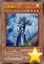 | 沉默魔术师 | [怪兽|效果] 魔法师/光 [★4] 1000/1000 这张卡不能通常召唤。把自己场上1只魔法师族怪兽解放的场合才能特殊召唤。 ①：这张卡的攻击力上升自己手卡数量×500。 ②：1回合1次，魔法卡发动时才能发动。那个发动无效。 ③：场上的这张卡被战斗或者对方的效果破坏的场合才能发动。从手卡·卡组把「沉默魔术师」以外的1只「沉默魔术师」怪兽无视召唤条件特殊召唤。 |
| 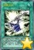 | 沉默之剑 | [魔法|速攻] ①：以自己场上1只「沉默剑士」怪兽为对象才能发动。那只自己怪兽的攻击力·守备力上升1500，直到回合结束时不受对方的效果影响。这张卡的发动和效果不会被无效化。 ②：把墓地的这张卡除外才能发动。从卡组把1只「沉默剑士」怪兽加入手卡。 |
| 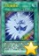 | 沉默魔爆破 | [魔法|速攻] ①：自己场上有「沉默魔术师」怪兽存在，自己手卡比对方多的场合，自己·对方的战斗阶段才能发动。双方直到手卡变成6张为止从卡组抽卡。这张卡的发动和效果不会被无效化。 ②：把墓地的这张卡除外才能发动。从卡组把1只「沉默魔术师」怪兽加入手卡。 |
| 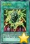 | 磁力再生 | [魔法|速攻] ①：从自己墓地的怪兽以及除外的自己怪兽之中以1只机械族或者岩石族的不能通常召唤的怪兽为对象才能发动。那只怪兽特殊召唤。 |
| 磁力 | [陷阱] ①：这个回合，原本种族是机械族或者岩石族的场上的怪兽不受自身以外的对方怪兽的效果影响。 | |
| 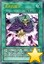 | 天声的服从 | [魔法] ①：支付2000基本分，宣言1个怪兽卡名才能发动。对方把自身卡组确认，有宣言的怪兽的场合，把那之内的1只给双方确认从以下效果选择1个适用。 ●确认的卡加入把这张卡发动的玩家手卡。 ●确认的卡在把这张卡发动的玩家场上无视召唤条件攻击表示特殊召唤。 |
| 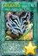 | 被埋葬的牲祭 | [魔法] ①：这个回合，自己作需要怪兽2只解放的上级召唤的场合只有1次，可以不把怪兽2只解放而从自己·对方的墓地把怪兽各1只除外来上级召唤。这个效果的发动后，直到回合结束时自己不能把怪兽特殊召唤。 |
| 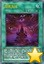 | 暗黑圣域 | [魔法|场地] ①：自己的「通灵盘」的效果要让「死之信息」卡出现的场合，可以让那卡作为通常怪兽（恶魔族·暗·1星·攻/守0）特殊召唤。这个效果特殊召唤的卡不受「通灵盘」以外的卡的效果影响，不会被作为攻击对象（自己场上只有被这个效果适用的怪兽存在的状态中对方的攻击变成对自己的直接攻击）。 ②：对方怪兽的攻击宣言时发动。进行1次投掷硬币。表的场合，那次攻击无效，给与对方那只对方怪兽的攻击力一半数值的伤害。 |
| 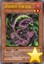 | 捕食植物 苍蝇地狱 | [怪兽|效果] 植物/暗 [★2] 400/800 ①：1回合1次，以对方场上1只表侧表示怪兽为对象才能发动。给那只怪兽放置1个捕食指示物。有捕食指示物放置的2星以上的怪兽的等级变成1星。 ②：这张卡和持有这张卡的等级以下的等级的怪兽进行战斗的伤害步骤开始时才能发动。那只怪兽破坏。那之后，这张卡的等级上升破坏的那只怪兽的原本等级数值。 |
| 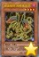 | 捕食植物 海鳝猪笼草 | [怪兽|效果] 植物/暗 [★4] 1600/1000 ①：这张卡的攻击力上升场上的捕食指示物数量×200。 ②：这张卡战斗破坏对方怪兽时才能发动。那只破坏的怪兽当作装备卡使用给这张卡装备。 ③：1回合1次，以这张卡的效果装备的1张怪兽卡为对象才能发动。那张卡破坏，自己基本分回复那个原本攻击力的数值。 |
| 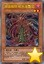 | 捕食植物 鱿鱼茅膏菜 | [怪兽|效果] 植物/暗 [★2] 800/400 ①：把这张卡从手卡送去墓地，以自己场上1只表侧表示怪兽为对象才能发动。这个回合，那只怪兽可以向有捕食指示物放置的对方怪兽全部各作1次攻击。 ②：表侧表示的这张卡从场上离开的场合发动。给对方场上的特殊召唤的怪兽全部各放置1个捕食指示物。有捕食指示物放置的2星以上的怪兽的等级变成1星。 |
| 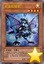 | 光波双颚机 | [怪兽|效果] 机械/光 [★4] 1600/800 「光波双颚机」的②的效果1回合只能使用1次。 ①：从额外卡组特殊召唤的怪兽在对方场上存在，自己场上没有怪兽存在的场合，这张卡可以从手卡特殊召唤。 ②：丢弃1张手卡才能发动。从手卡·卡组把1只「光波」怪兽特殊召唤。这个效果的发动后，直到回合结束时自己不是「光波」怪兽不能特殊召唤。 |
| 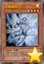 | 光波镜骑士 | [怪兽|效果] 战士/光 [★4] 0/0 「光波镜骑士」的②的效果1回合只能使用1次。 ①：自己的「光波」怪兽1只被战斗破坏送去自己墓地时，把这张卡从手卡丢弃才能发动。选自己的手卡·场上1张卡送去墓地，那只破坏的怪兽特殊召唤。 ②：这张卡被送去墓地的回合的结束阶段才能发动。从卡组把1张「光波」卡加入手卡。 |
| 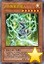 | PSY骨架多线人 | [怪兽|效果] 念动力/光 [★6] 0/2500 「PSY骨架多线人」的③的效果1回合只能使用1次。 ①：这张卡只要在手卡·墓地存在，当作「PSY骨架驱动者」使用。 ②：自己场上的「PSY骨架」卡被战斗·效果破坏的场合，可以作为代替把手卡的这张卡丢弃。 ③：这张卡在墓地存在，自己场上有「PSY骨架」调整特殊召唤的场合才能发动。这张卡从墓地特殊召唤。这个效果特殊召唤的这张卡从场上离开的场合除外。 |
| 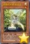 | 芳香炽天使-欧白芷 | [怪兽|效果|调整] 植物/光 [★1] 0/0 「芳香炽天使-欧白芷」的①②的效果1回合各能使用1次。 ①：把这张卡从手卡丢弃，以自己墓地1只「芳香」怪兽为对象才能发动。自己基本分回复那只怪兽的攻击力的数值。这个效果在对方回合也能发动。 ②：这张卡在墓地存在，自己基本分比对方多，自己场上有「芳香」怪兽存在的场合才能发动。这张卡从墓地特殊召唤。这个效果特殊召唤的这张卡从场上离开的场合除外。 |
| 电子化天使-美朱濡- | [怪兽|效果|仪式] 天使/光 [★10] 3000/2000 「机械天使的仪式」降临。 ①：这张卡仪式召唤成功的场合才能发动。从额外卡组特殊召唤的对方场上的怪兽全部破坏，给与对方破坏的怪兽数量×1000伤害。这个回合，这张卡在同1次的战斗阶段中可以作2次攻击。 ②：1回合1次，要让场上的卡破坏的魔法·陷阱·怪兽的效果发动时，让自己墓地1只仪式怪兽回到卡组才能发动。那个发动无效并破坏。 | |
| 凶饿毒融合龙 | [怪兽|效果|融合] 龙/暗 [★8] 2800/2000 衍生物以外的场上的暗属性怪兽×2 ①：这张卡融合召唤成功的场合才能发动。选对方场上1只特殊召唤的怪兽，这张卡的攻击力直到回合结束时上升那个攻击力数值。 ②：1回合1次，以对方场上1只5星以上的怪兽为对象才能发动。直到回合结束时，这张卡当作和那只怪兽同名卡使用，得到相同效果。 ③：融合召唤的这张卡被破坏的场合才能发动。对方场上的特殊召唤的怪兽全部破坏。 | |
| 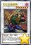 | 花札卫-猪鹿蝶- | [怪兽|效果|同调] 战士/暗 [★6] 2000/2000 调整＋调整以外的怪兽2只 ①：只要这张卡在怪兽区域存在，自己的「花札卫」怪兽向守备表示怪兽攻击的场合，给与对方为攻击力超过那个守备力的数值的战斗伤害。 ②：1回合1次，把自己墓地1只「花札卫」怪兽除外才能发动。直到下次的对方回合结束时，对方不能把墓地的卡的效果发动，不能从墓地把怪兽特殊召唤。 |
| 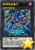 | 暗镇魂超量龙 | [怪兽|效果|超量] 龙/暗 [☆5] 3000/2500 5星怪兽×3 ①：这张卡有「暗叛逆超量龙」在作为超量素材的场合，得到以下效果。 ●1回合1次，把这张卡1个超量素材取除，以对方场上1只表侧表示怪兽为对象才能发动。那只怪兽的攻击力变成0，这张卡的攻击力上升那个原本攻击力数值。 ●对方把怪兽的效果发动时，把这张卡1个超量素材取除才能发动。那个发动无效并破坏。那之后，可以选自己墓地1只超量怪兽特殊召唤。 |
| 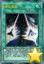 | 惊异灵摆 | [魔法] 「惊异灵摆」在1回合只能发动1张。 ①：自己的灵摆区域没有卡存在的场合才能发动。从自己的额外卡组把2只卡名不同的表侧表示的「魔术师」灵摆怪兽加入手卡。 |
| 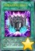 | 升阶魔法-幻影骑士团的出击 | [魔法|速攻] ①：自己·对方的主要阶段，以自己场上1只没有超量素材的暗属性超量怪兽为对象才能发动。比那只自己怪兽阶级高1阶的1只暗属性超量怪兽在作为对象的怪兽上面重叠当作超量召唤从额外卡组特殊召唤，把这张卡在下面重叠作为超量素材。 ②：自己主要阶段把墓地的这张卡除外，以自己场上1只暗属性超量怪兽为对象才能发动。把手卡1只「幻影骑士团」怪兽在那只怪兽下面重叠作为超量素材。 |
| 花积 | [魔法] 「花积」的②的效果1回合只能使用1次。 ①：从卡组选「花札卫」怪兽3种类，用喜欢的顺序回到卡组上面。 ②：把墓地的这张卡除外，以自己墓地1只「花札卫」怪兽为对象才能发动。那只怪兽加入手卡。这个效果在这张卡送去墓地的回合不能发动。 | |
| 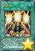 | 超来来 | [魔法] 「超来来」在1回合只能发动1张。 ①：从自己卡组上面把3张卡翻开，那之中的「花札卫」怪兽尽可能无视召唤条件特殊召唤。这个效果特殊召唤的怪兽的等级变成2星，效果无效化。剩下的卡全部里侧表示除外，自己失去除外的卡数量×1000基本分。 ②：把墓地的这张卡除外，把自己场上1只怪兽解放才能发动。从手卡把1只「花札卫」怪兽无视召唤条件特殊召唤。 |
| 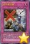 | 老千御法度 | [陷阱|永续] ①：1回合1次，对方从手卡把怪兽特殊召唤时才能发动。从手卡特殊召唤的对方场上的怪兽全部回到持有者手卡。 ②：场上没有「花札卫」同调怪兽存在的场合这张卡送去墓地。 |
常见问题
Q.某张卡有BUG！
A.请到页面下方留言反馈，或联系233服QQ群里的尸体233（QQ：921439818）。
Q.卡片右下角的黄色星星是什么意思？
A.表示那张卡暂未有实卡，是先行卡。其卡片密码暂时使用临时密码（1开头的9位数）。
这种卡需要在23333端口才能使用。此外部分使用同样密码体系的服务器（不包括Checkmate）也可以使用。
实卡发售后，对应的带星星的先行卡会失效，请更新游戏，来获取正式的版本。
Q.卡片右下角的绿色加号是什么意思？
A.表示那张卡已有实卡但YGOPRO的国内官方版本暂未更新，是本补丁增加的卡片。其卡片密码是正式密码。
这种卡在233端口更新前只能在23333端口使用。但其他更新速度较快的服务器（包括Checkmate）一般也可使用。
一般这种卡不久就会正式更新到233服，请关注公告，更新后请下载YGOPRO的正式更新来获取那些卡。
Q.为什么安装了最新的先行卡补丁仍然没有某些卡？
A.本补丁只包含先行卡，不包含已经正式更新的卡。
请下载YGOPRO的正式更新来获取那些卡。
Q.为什么我更新先行卡补丁之后反而有卡消失了？
A.因为那些卡已经不再是先行卡了，本补丁不再包含它们。
请下载YGOPRO的正式更新来获取那些卡。
Q.为什么YGOPOT不能使用这个补丁？
A.YGOPOT有自己的新卡更新体系和服务器，与YGOPRO和233服均不兼容，所以YGOPOT的用户请把更新新卡和修复BUG的工作交给他们。
Q.安装后没有新卡？
A.本补丁附带新卡列表的卡组。
请确保你把文件解压到了游戏文件夹里，而不是新建了一个文件夹。
电脑版需要重启游戏才能重新载入数据库。
手机版需要自定义数据库，详见使用方法。
Q.安装后新卡没有卡图？
A.请确保你解压出来了压缩包里所有文件，不能只解压1个文件。
Q.手机版找不到sdcard文件夹？
A.部分手机可能位于storage或mnt文件夹里。
Q.手机版提示没有权限？
A.同上，换个文件夹试试。
Q.某张卡不能用，提示无效卡组？
A.本补丁的最新版只能与23333端口完美兼容。
请下载YGOPRO的正式更新，并更新先行卡补丁到最新版，把端口改为23333，才能正常使用先行卡。
Q.搜索卡片时发现有重复卡片？
A.因为本补丁是先行卡补丁，正式更新的卡片可能会与本补丁的卡片重复。删除或更新本补丁即可。
Q.电脑版怎么删除补丁？
A.删除expansions文件夹或其中pre-release.cdb即可。
Q.手机版怎么删除补丁？
A.点自定义卡片数据库下面的重置卡片数据库。
如果你打过其他的补丁，还需要再自定义一次数据库，选择cards.cdb。